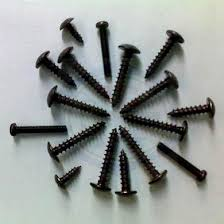

Thông tin chi tiết

Nhuộm đen bulong, ốc vít
Xi mạ kẽm 7 màu là sau khi trải qua quá trình xử lí bề mặt kim loại, phủ lên bề mặt kim loại một lớp kẽm màu do qua lớp thụ động crom, làm cho sản phẩm, và chống bị gỉ sét và sử dụng lâu bền với thời gian.
Thông tin sản phẩm
-
Nhuộm đen bulong, ốc vít là gì?
Xi mạ kẽm 7 màu là sau khi trải qua quá trình xử lí bề mặt kim loại, phủ lên bề mặt kim loại một lớp kẽm màu do qua lớp thụ động crom, làm cho sản phẩm, và chống bị gỉ sét và sử dụng lâu bền với thời gian.

-
Tại sao nên Nhuộm đen bulong, ốc vít?
Mạ kẽm 7 màu có tác dụng bảo vệ kim loại với lớp mạ có ánh màu vàng xanh, có độ bóng thích hợp dùng để mạ trang trí, cũng là ứng dụng phổ biến nhất. Ngoài ra công nghệ mạ kẽm 7 cung với giá thành phù hợp nên hiện nay đang được nhiều ngành công nghiệp lựa chọn để bảo vệ bề mặt kim loại.
-
Quy trình Nhuộm đen bulong, ốc vít:
- Gia công bề mặt vật liệu kim loại: Thực hiện phương pháp gia công cơ học như là mài bóng, mài vô tâm… để làm cho bề mặt kim loại phải được nhẵn và bóng.
- Sạch dầu mỡ: Sử dụng dùng hóa chất NaOH để tẩy sạch dầu mỡ, bụi bám bẩn trên kim loại, sau đó đem rửa lại bằng nước sạch.
- Tẩy bóng: Thực hiên phương pháp điện hóa để xóa hết những bụi bẩn, khuyết tật còn sót lại sau khi thực hiện công đoạn gia công bề mặt.
- Ngâm trong dung dịch cromat: Các vật liệu mạ kẽm 7 màu cần phải ngâm trong dung dịch cromat màu vàng, để cung cấp cho vật liệu cần mạ có màu vàng hoặc màu óng ánh vàng. Sau khi bạn đã chuẩn bị xong dung dịch này thì bạn chỉ cần đơn giản là nhúng vào dung dịch và chờ đợt vài phút, bởi vì khi đó kẽm và Cromat sẽ phản ứng tạo thành màu sắc mới.
- Xử lý hoạt hóa bề mặt vật liệu mạ kẽm 7 màu: Trước khi thực hiện thụ động hóa bề mặt thì lớp mạ kẽm phải ở trạng thái hoạt động, nếu không thì bạn cần tiến hành hoạt động hóa lớp mạ kẽm hay hoạt hóa hợp kim kẽm trong dung dịch Axit sunfuric(H2SO4) từ 5-15g/lít ở nhiệt độ phòng trong khoảng 2-5s sẽ có tác dụng làm sạch rồi mới cromat hóa hoặc thụ động hóa.
- Để kiểm tra chất lượng của màng thụ động: Bạn có thể dùng dung dịch chì axetat, nếu bề mặt kim loại không có màng cromat thì sẽ xuất hiện các chấm đen của chì toát ra do tiếp xúc. Màng cromat ngăn cản phản ứng tiếp xúc, màng được đánh giá là tốt nếu sau 5s đối với màng không màu và 60s đối với màng có màu mới xuất hiện chấm đen trên bề mặt mạ kẽm.
- Thời gian phun muối của lớp mạ kẽm 7 màu: Các Cromat màu vàng óng ánh trên cadmium mạ kẽm tập trung chất lỏng được sử dụng ở mức từ 0,5-3% theo thể tích trong nước ở khoảng 65-90 độ F. Kết thúc có được sức đề kháng để phun muối giúp có thể vượt qua bình thường 48 giờ phun muối quy định cho cromat vàng trên kẽm.
-
Ứng dụng việc Nhuộm đen bulong, ốc vít
Sản phẩm được mạ kẽm 7 màu có khả chống mòn và chống chịu ô môi trường có điều kiện thời tiết không thuận lợi. Đặc biệt lớp mạ kẽm 7 màu phủ trên bề mặt mang đến vẻ ngoài bắt mắt hơn thích hợp cho việc trang trí.
 -
Lợi ích khi Nhuộm đen bulong, ốc vít
Sản phẩm được mạ kẽm 7 màu có khả chống mòn và chống chịu ô môi trường có điều kiện thời tiết không thuận lợi. Đặc biệt lớp mạ kẽm 7 màu phủ trên bề mặt mang đến vẻ ngoài bắt mắt hơn thích hợp cho việc trang trí.